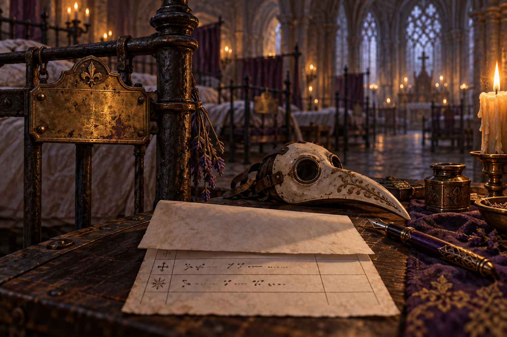
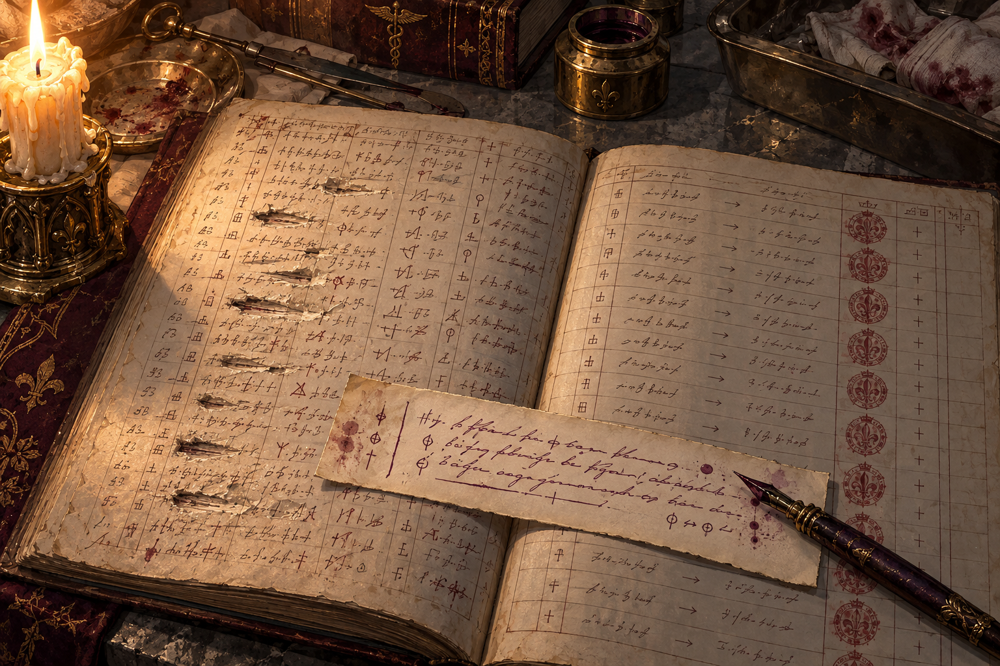
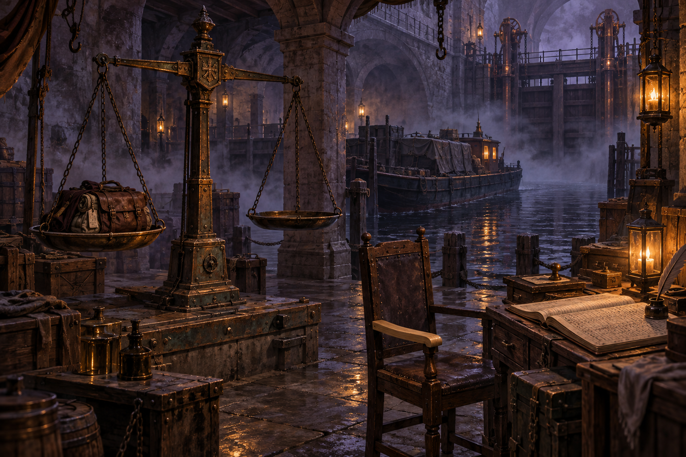
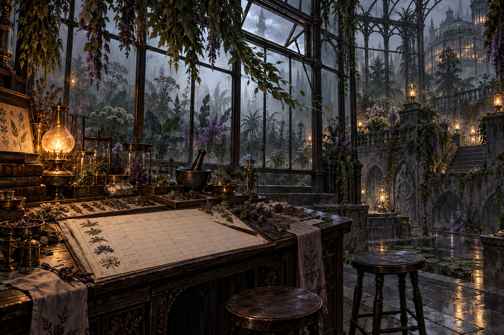
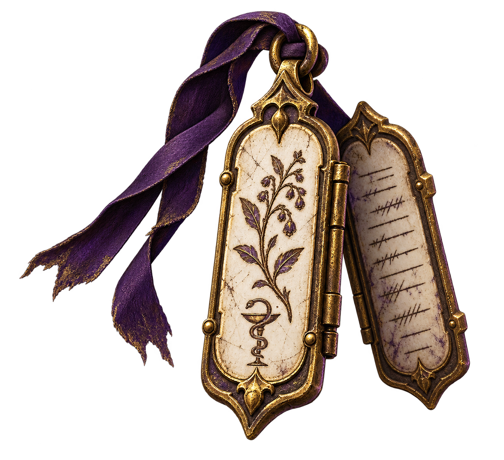
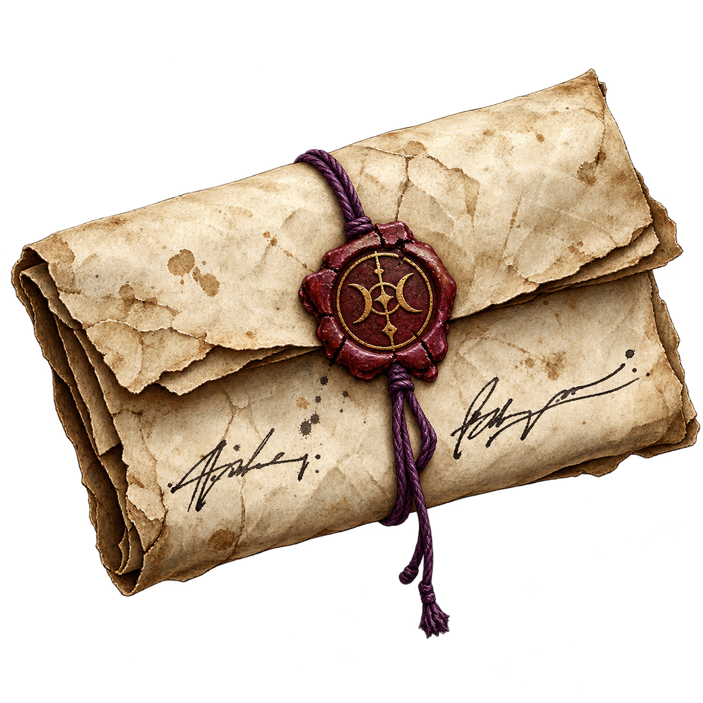

스토리 장면 5장과 핵심 유물 3종. 작가 검수용 모음으로 후반부 내용을 포함합니다. 후반 지역 진행과 유물 전투 효과는 아직 미구현이며, 일반 도감은 기존 공개 조건을 유지합니다.
침상은 여섯 개였다. 덮개는 반듯하게 개어져 있었고, 머리맡 명패에는 서로 다른 이름이 남아 있었다. 장부에는 여섯 줄 모두 완치 표시가 있었다. 퇴원 날짜는 한 줄도 없었다. 미라는 명패를 순서대로 떼어 천에 감쌌다. 마지막 것을 들어 올리자 뒷면에 말라붙은 약품이 묻어났다. 침대는 비어 있었지만 오래전에 버려진 물건처럼 먼지가 쌓이지는 않았다. 장부 끝의 짧은 메모도 옮겨 적었다. 수령인란은 별도 보관. 누구를 가리키는 말인지 단정하지 않고, 그 문장 아래에 병동 번호를 적었다.

명패를 떼려던 미라의 손이 멎었다. 누군가 돌아온다면 자기 침대를 알아볼 표식이 필요할지도 몰랐다. 그녀는 명패를 그대로 두고 여섯 이름을 종이에 옮겼다. 완치 표시와 비어 있는 퇴원 날짜, 별도로 보관했다는 수령인란까지 빠짐없이 적었다. 모르는 칸은 추측으로 채우지 않았다. 잉크가 마르기를 기다리며 가면을 곁에 놓았다. 방금 쓴 이름들의 마지막 획은 모두 바깥으로 빠져 있었다. 가면 안쪽의 필체와는 달랐다. 미라는 사본 위에 오늘 날짜를 적었다. 자신이 확인한 사실과, 아직 묻지 못한 질문을 섞지 않기 위해서였다.

장부의 여백에 작은 갈고리 같은 표시가 있었다. 미라는 그것을 읽는 데 시간이 걸리지 않았다. 경과 관찰. 긴 말을 쓰기 싫을 때 자신이 쓰던 약어였다. 그 아래에는 관찰을 끝냈다는 표시가 없었다. 다음 장의 이송란에는 인계 완료가 적혀 있었다. 미라는 두 문장을 번갈아 읽었다. 한 장에서는 지켜봐야 할 사람이었고, 다른 장에서는 보내도 되는 사람이었다. 그녀는 약어를 풀어 썼다. 경과를 계속 관찰할 것. 누군가 잘못 읽었다는 변명보다 먼저, 자신이 충분히 적지 않았다는 사실을 남겼다.

마렌은 배에 오르려는 미라에게 가방을 먼저 올려놓으라고 했다. 저울은 잠시 내려갔다가 원래 자리로 돌아왔다. 미라가 손을 떼자 다시 기울었다. 그는 수치를 고치지 않았다. 손을 댄 사람의 이름과 시간을 옆에 적었다. 검사소의 옛 서식에는 화물 무게만 있었고, 새로 묶은 종이에는 누가 얼마나 오래 잡고 있었는지도 남아 있었다. “운반하는 동안 가벼워졌다고 좋아한 적이 있어요.” 마렌은 저울 아래의 의자를 밀어 넣었다. 한쪽 팔걸이만 새 나무였다. “그 뒤부터는 사람도 셉니다.”

온실에는 깨진 유리보다 멀쩡한 유리가 더 많았다. 로엔은 매일 같은 환기창 하나를 열었다. 실내 온도가 내려가면 약초 수확량이 줄어든다는 경고가 창틀에 남아 있었다. 그는 경고 아래에 작은 표를 붙였다. 작업자가 자기 집 주소를 말할 수 있는지, 전날 함께 일한 사람을 알아보는지. 환기창을 닫은 날에는 수확량이 늘고 대답이 줄었다. 미라는 잎의 색을 보는 대신 표의 빈칸을 세었다. 로엔은 빈칸을 실패로 표시하지 말아 달라고 했다. 대답하지 못한 것과 질문받지 못한 것을 나눠 적을 종이가 아직 오지 않았다는 뜻이었다.

처방판은 두 장의 얇은 금속을 경첩으로 이어 만든 물건이었다. 환자를 향하는 면에는 복용 간격이, 담당자 쪽에는 관찰할 반응이 적혀 있었다. 접으면 환자 쪽 글만 밖으로 남았다. 미라는 안쪽에서 지워진 항목 하나를 찾았다. 질문에 대답하는 데 걸린 시간. 그 아래의 칸들은 꼼꼼히 채워져 있었다. 말을 잊는다는 사실을 몰랐던 것은 아니었다. 알고도 환자가 읽는 면에는 옮기지 않았다. 경첩 끝에 천이 끼어 있었다. 누군가 두 면을 펼쳐 둔 채 쓰려고 묶은 흔적이었다. 미라는 천을 빼지 않았다. 처방판을 책상 위에 세우자 맞은편에서도 안쪽의 작은 칸들이 보였다.

첫 번째 서명은 미라의 것이었다. 두 번째는 끝획이 안으로 돌아갔다. 가면 안쪽에서 보았던 버릇과 닮아 있었다. 그녀는 두 종이를 겹치려다가 멈췄다. 닮은 글씨만으로 사람을 정할 수는 없었다. 두 서명 사이에는 작은 수정 기호가 있었다. 투여 뒤에도 의사를 확인할 것. 본문의 인계 완료라는 말에 선을 긋고 덧붙인 문장이었다. 잉크가 다른 것으로 보아 처음부터 함께 쓴 내용은 아니었다. 종이 뒷면에는 수정된 처방판을 몇 장 회수했는지 적혀 있었다. 숫자는 끝까지 올라가지 못했다. 미라는 두 번째 서명을 먼저 베끼지 않았다. 회수하지 못한 처방판의 수를 옮겼다. 누군지 알아내는 일과, 그 사람이 멈추려던 일이 무엇인지를 확인하는 일은 함께 해야 했다.
두 조각을 맞추자 안쪽의 홈이 이어졌다. 이안은 금속이 맞닿는 소리보다 먼저 끈을 놓았다. 미라는 연결부에 새 걸쇠를 달았다. 손이 떨릴 때에도 한 번 잡아당기면 열리는 것이었다. 그들은 걸쇠를 잠근 뒤 다시 풀었다. 아무 일도 시작하지 않은 채 같은 동작을 몇 번 더 했다. 미라는 이안이 혼자 풀 수 있는지 보았고, 이안은 그녀가 그 손을 붙잡지 않는지 보았다. 예전의 매듭은 잘라 낸 천 위에 남았다. 오래 버텼다는 이유로 다시 쓸 수는 없었다. 새 끈에는 각자의 손이 닿는 길이를 남겼다. 초승달은 전보다 단단하게 묶이지 않았다. 대신 어느 쪽에서도 멈출 수 있게 되었다.